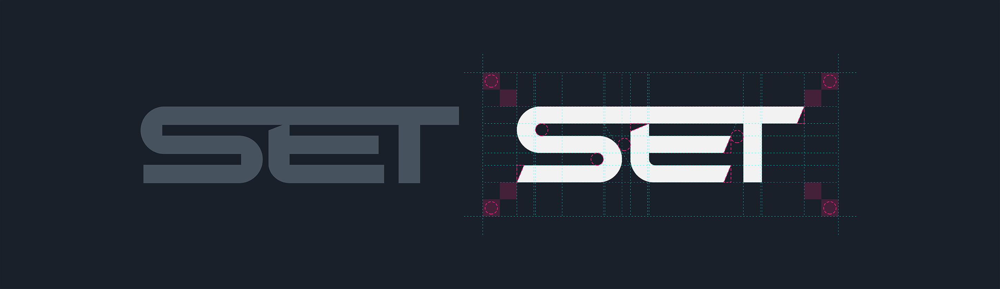
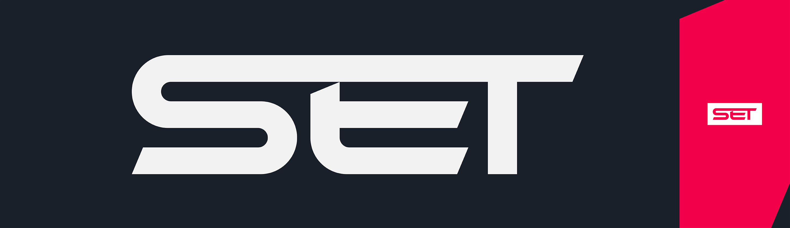
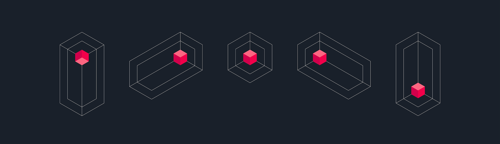
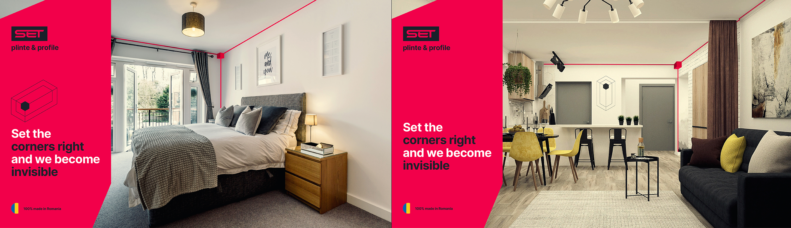
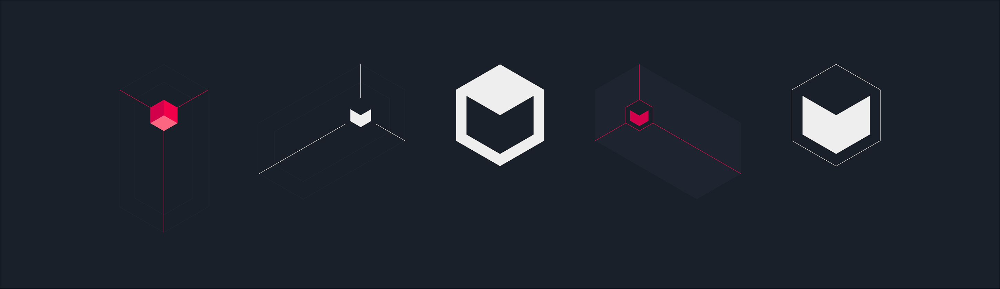
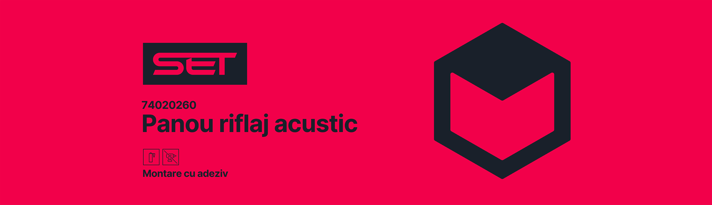

SET
Extindere brand
Extinderea identității vizuală, element secundar, logo facelift, actualizare culori
Koborking studio
01 Care este valoarea adăugată?
Lucrarea anterioară de identitate a produs multe sub-branduri și ghiduri extinse, dar nu a creat o prezență distinctă și unitară pe raft sau în practică. Efectul real al ghidului a fost greu de observat în practică.
În loc de un alt rebrand complet, introducem un element secundar de brand: o formă de colț/cub care poartă recunoașterea acolo unde logo-ul singur nu poate. Acest document stabilește regulile și abordările pentru acel element, plus o ușoară refacere a logo-ului și o culoare de brand rafinată. Tipografia și restul sistemului existent rămân neschimbate.
Ce urmează este un ghid concis pentru aplicarea acestor modificări în mod consecvent între toate punctele de contact.
02 Refacerea logo-ului
Logo-ul a primit un facelift: tăieturi interne subtile și ajustări de spațiere. Esența, structura și cuvântul rămân aceleași. Nu este un logo nou.
Obiectivul a fost să calibrăm semnul pentru toate dimensiunile. Acum se citește bine atât la dimensiuni foarte mici (etichete, icoane) cât și foarte mari (postere, semne). Majoritatea clienților nu vor observa schimbarea. Nu este nevoie de anunț pe piață sau de refacere a aplicațiilor existente. Schimbările sunt vizibile în special la dimensiuni uriașe sau foarte mici, unde alinierea și echilibrul optic contează cel mai mult.

Logo-ul înainte și după refacere, cu rafinamentele subtile ale tăieturilor interne și spațierii.

Logo-ul la dimensiune mare și mică.
03 Elementul colțului
Aceasta este partea cea mai importantă a contribuției noastre. Logo-ul este un semn tipografic – scrie „SET". Cubul devine elementul versatil și unic asociat cu brandul. Va fi mereu prezent într-o formă sau alta. Obiectivul este un sistem care poartă semnul unic al brandului indiferent de situațiile noi care apar. Suprafețe, formate sau contexte noi pot apărea pe care nu le putem prevedea astăzi; acest sistem ne permite să ne adaptăm păstrând recognoscibilitatea.
Ideea de bază
„Trăim în colț." „Fă colțul corect și devenim invizibili." Profilele de margine și plintele sunt detaliul care finalizează un spațiu – invizibile când sunt făcute corect, dar absența lor lasă spațiul neterminat. Semnul cubului imită colțul în sine: conceptul SET care trăiește sau se ascunde în colț.
Abordări situaționale
Cubul se adaptează la situație. Urmează principalele contexte pe care l-am identificat.
Când este suficient spațiu
– Randări 3D de interioare, fotografii, showroom-uri reale (ex. stil Ikea, retail)
Din orice unghi putem identifica cele trei plane ale unei camere care se întâlnesc în colț. Rotim semnul pentru a se potrivi cu acel unghi și plasăm cubul în centru unde trei muchii se întâlnesc.
Trasăm linii colorate (în roșul brandului) de-a lungul celor trei muchii ale celor trei plane. Aceste linii se întâlnesc la cub. Chiar dacă cubul e mic, muchiile evidențiate atrag atenția spre el – compoziția rămâne puternică și impactantă. Imaginea principală poate fi o fotografie sau interior 3D; tratamentul colțului rămâne clar.
În showroom-uri reale, putem vopsi muchiile și plasa un cub roșu fizic în colț. Aceeași idee: evidențiem un brand care e în mare parte invizibil și face spațiul complet, iar fără el spațiul nu s-ar simți la fel de complet.

Cubul poate fi rotit pentru a se potrivi cu orice unghi al camerei, cu cubul plasat în centru unde cele trei muchii se întâlnesc.

Tratament aplicat în randări 3D de interioare, cu muchiile evidențiate atrăgând atenția spre cub.
Aceeași logică se aplică fotografiei și showroom-urilor reale: colțul devine scena.
Când nu există spațiu
– Postere, print, retail big-box (ex. Dedeman), alături de competitori
Aici extragem cubul singur. Fără linii de colț al camerei – o formă e mai simplă, dar aceeași idee. Cubul devine propriul simbol.
Competitorii de cele mai multe ori arată de obicei un interior, ceva text și un logo mic. Abordarea noastră: punem cubul uriaș în față. Devine atracția principală. Diferențiere instantanee – puternic, impactant și o continuare directă a conceptului de colț.
Interiorul poate sta în fundal sau în interiorul cubului ca o fereastră. Arătăm brandul cu un gest bold în timp ce tot arătăm un interior. Asta rezolvă o problemă practică: o singură plintă sau profil de margine e greu de făcut vizual convingător; interioarele vând ideea unei case terminate dar nu sunt unice singure.

Cubul extras ca simbol independent, gata să poarte brandul când nu există context de cameră.

Postere cu cubul ca atracție principală, creând diferențiere instantanee în context retail big-box.
Aceste formate funcționează la târguri, expoziții retail și campanii digitale.
Când spațiul e limitat
– Etichete, formate subțiri (ex. profile de margine, etichete în poziție inversă)
Pe etichete subțiri pentru profile de margine, logo-ul e adesea dublat (o orientare per muchie) ca să se citească corect când produsul e cu capul în jos. Cubul apare ca simbol – uneori înainte de text – dar nu uriaș, pentru că eticheta trebuie să arate alte informații.

Etichete pentru profile de margine.
Sistemul se scalează fără să piardă ideea.
Ce rămâne constant
- Cubul vine mereu din același concept: colțul, SET trăind în el, detaliul care finalizează un spațiu.
- Nu: pune logo-ul în interiorul cubului; folosește-l ca model sau textură aglomerată. Cubul ar trebui să pară ingineresc și arhitectural, nu decorativ.
- Vor apărea situații noi. Sistemul e conceput să se adapteze – aplicăm aceeași logică la formate, suprafețe sau contexte noi, astfel încât semnul unic al brandului să fie mereu prezent într-o formă sau alta.
04 Culoare
Actualizăm două culori primare din paleta existentă: roșul principal și negrul principal. Restul paletei (culori secundare, albastru deschis, alb etc.) rămâne conform ghidului de brand original.
Roșu principal (actualizat)
| Format | Valoare |
|---|---|
| Hex | #F2004A |
| RGB | R 242, G 0, B 74 |
| CMYK | C 0, M 100, Y 70, K 5 |
Anterior: #FF0043 (Pantone 192 C).
O ușoară deplasare spre magenta diferențiază brandul de roșul Vodafone, pe care culoarea anterioară îl semăna foarte mult. Noul roșu păstrează aceeași energie și impact dar se citește ca distinct al nostru.
Negru principal (actualizat)
| Format | Valoare |
|---|---|
| Hex | #1A2029 |
| RGB | R 26, G 32, B 41 |
| CMYK | C 37, M 22, Y 0, K 84 |
Anterior: #212128 (Pantone Black 6 C).
În loc de negru pur, folosim un gri închis colorat – un întunecat albăstrui care devine negrul propriu al brandului. Pe text peste alb, se citește ca negru; pe fundaluri mai mari, nuanța albastră devine vizibilă și adaugă personalitate. Păstrează documentele sec (online sau print) de la a părea plate și dă brandului un caracter subtil dar recognoscibil chiar și în layout-uri neutre.
În practică – Aceste schimbări subtile în nuanță creează o pereche unică. Chiar cu nimic altceva – fără alte culori, fără fotografie – doar cele două culori suprapuse, produc un contrast vibrant distinct. Se bazează pe contrastul simultan: suficient contrast pentru citire, dar nu suficient ca fundalul să dispară. Efectul stă pe acea linie de psihologie subtilă – când observat în vederea periferică, poate face oamenii să se uite din nou.

Roșul și negrul principal pe fundal neutru.
05 Tipografie
Tipografia existentă a brandului rămâne neschimbată. Păstrăm fonturile, greutățile și ierarhia curente conform identității și ghidului de brand original. Acest document nu introduce fonturi noi sau un sistem tipografic nou; se concentrează pe elementul secundar colț/cub, refacerea logo-ului și culoarea actualizată.
Împreună cu elementul colț și culorile actualizate, tipografia susține un sistem unic, recognoscibil.